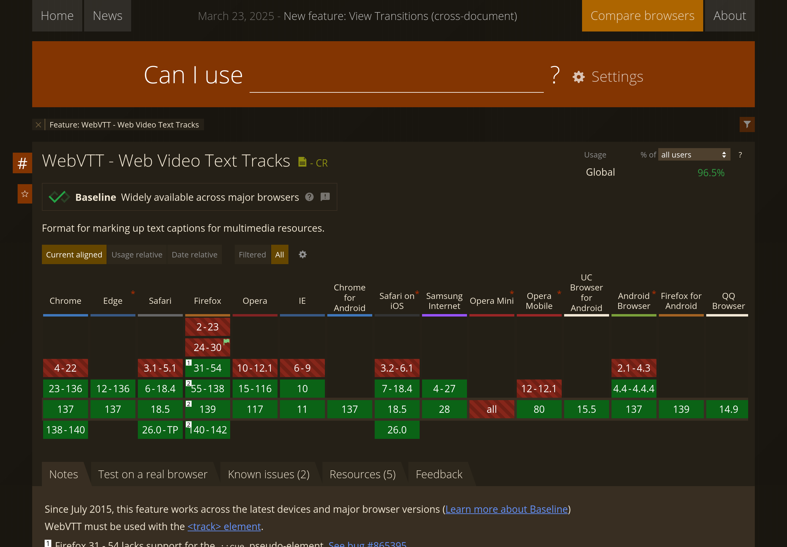

HTML5 <video> и субтитры

Был приятно удивлён, узнав, что у элемента <video> есть поддержка <track>, в который можно положить субтитры в формате WebVTT. Формат не сильно отличается от того же SRT/ASS, которым все пользуются. Есть даже удобный конвертер.
Вот думаю… В принципе, можно разобраться, как сделать переключение разрешения видео. На JS задача должна быть элементарная. Чистый HTML5 такого ещё не предусматривает. И вот, уже можно будет хостить видео и у себя на сайте!